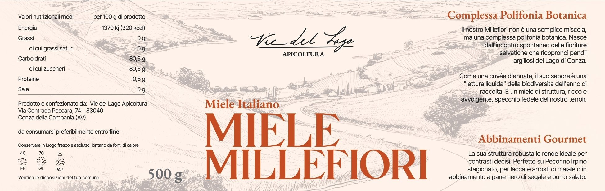
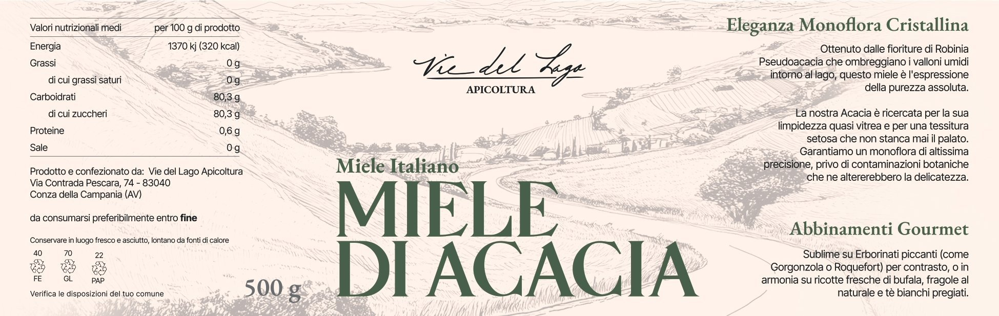
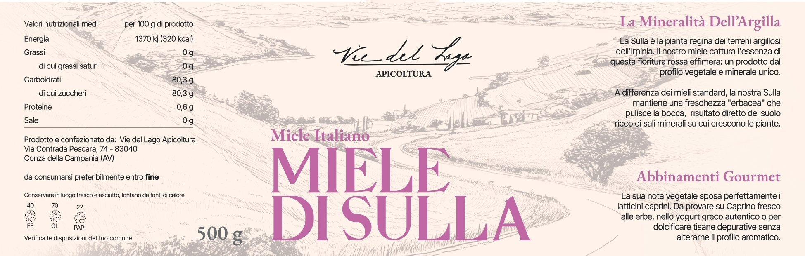
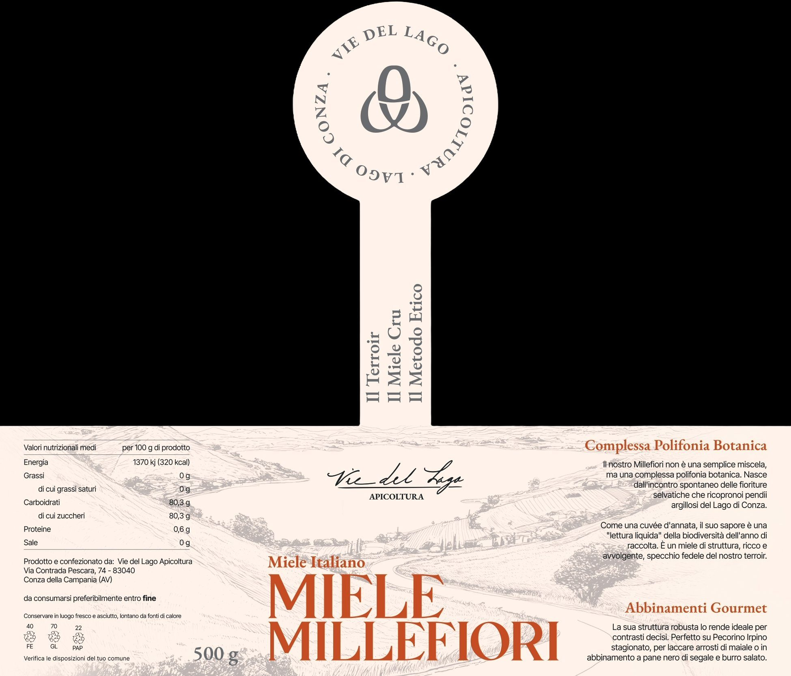

Brand identity · Design · Territorio
Tre etichette.
Un solo racconto.
Ogni vasetto di Vie del Lago porta un'etichetta che non è decorazione — è un manifesto. Il medaglione, il paesaggio inciso, il colore del miele: ogni scelta grafica nasce da una scelta produttiva. Qui raccontiamo come e perché.



Un'identità visiva nata
dal territorio
Il progetto grafico di Vie del Lago parte da una premessa semplice: l'etichetta deve essere onesta quanto il miele che contiene. Nessun artificio, nessuna illustrazione di fantasia — tutto ciò che si vede è una traduzione visiva di qualcosa di reale: il lago, le argille, il metodo.
Il risultato è un sistema coerente dove tre etichette diverse comunicano chiaramente la loro individualità — tre mieli distinti, tre terroir stagionali — ma appartengono inequivocabilmente alla stessa famiglia. Il medaglione in cima, il paesaggio inciso alla base, la tipografia italiana classica: elementi fissi che tengono insieme la diversità dei colori.
La scelta di usare un linguaggio grafico vicino all'editoria di pregio — serifato, sobrio, con spazi bianchi generosi — non è casuale: vogliamo che aprire un vasetto di Vie del Lago abbia lo stesso senso di aprire un libro ben fatto. Qualcosa che vale la pena tenere.
Il medaglione
Raffigura un'ape stilizzata e racchiude in sé un doppio significato: la «V» di Vie e la «L» di Lago. Un simbolo che è insieme natura e identità del brand.
Il paesaggio inciso
L'illustrazione a tratto fine evoca le mappe geologiche e i disegni naturalistici del '700 irpino.
Il colore come codice
Rosa, terracotta, verde: ogni tinta rispecchia il carattere sensoriale del miele, non una convenzione arbitraria.
La firma corsiva
«Vie del Lago» in corsivo manuale sottolinea l'artigianalità — un oggetto firmato, non prodotto in serie.
Ogni elemento ha un significato
Non c'è nulla sull'etichetta che sia solo decorativo. Dal cerchio in cima all'ultimo numero nutrizionale in basso, ogni scelta risponde a una logica precisa.

Il medaglione circolare
Raffigura un'ape stilizzata al centro, che racchiude in sé la «V» di Vie e la «L» di Lago. Attorno, il testo circolare «VIE DEL LAGO · APICOLTURA · LAGO DI CONZA» — un sigillo d'origine geografica preciso e riconoscibile.
Il gambo e la tripletta
Sotto il medaglione, in verticale: «Il Terroir · Il Miele Cru · Il Metodo Etico». I tre valori fondativi del brand, scritti in senso di lettura ascendente — dal basso verso l'alto come la pianta che cresce.
Il paesaggio e la firma
L'illustrazione a tratto fine mostra la Valle dell'Ofanto con il lago sullo sfondo. Sotto, la firma corsiva «Vie del Lago Apicoltura» — l'unica parte dell'etichetta scritta a mano, volutamente.
Il nome grande e il colore
Il nome del miele — MILLEFIORI, DI ACACIA, DI SULLA — occupa la parte bassa in carattere serif largo. Il colore del nome è il codice identitario del prodotto: terracotta, verde, rosa antico.
I testi di destra
Titolo evocativo ("Complessa Polifonia Botanica", "Eleganza Monoflora Cristallina", "La Mineralità dell'Argilla") e abbinamenti gourmet — non descrizioni di marketing, ma note di degustazione vere.
Complessa Polifonia
Botanica
Il Millefiori è il miele più difficile da raccontare — e per questo meritava l'etichetta più ambiziosa. Non è "una miscela di fiori": è la fotografia botanica di un anno intero sull'Oasi di Conza. Il testo di etichetta lo definisce «una lettura liquida della biodiversità dell'anno di raccolta», e la grafica rispecchia questa complessità.
La scelta del colore terracotta-arancio rimanda direttamente alle argille irpine, al calore dell'estate e alla struttura robusta di questo miele — il più denso e avvolgente dei tre. Non un giallo convenzionale per il miele, ma una tinta che racconta il suolo prima ancora del fiore.
Colore terracotta: le argille della Valle dell'Ofanto, la struttura minerale del miele, il calore dell'estate irpina.
Titolo «Complessa Polifonia Botanica»: non un claim commerciale ma una definizione tecnica — il Millefiori è un blend di frequenze floreali, come una sinfonia.
Abbinamenti: Pecorino Irpino stagionato, arrosti di maiale, pane nero e burro salato — prodotti con la stessa intensità e struttura del miele.
Eleganza Monoflora
Cristallina
L'Acacia è il miele della precisione: monoflora certificato, limpidissimo, quasi vitreoso. L'etichetta traduce questa purezza nel verde più sobrio del sistema — il colore della Robinia Pseudoacacia che cresce nei valloni umidi intorno al lago, al riparo dalla luce diretta.
La scelta del verde non è botanicamente ovvia — le acacie fioriscono di bianco. Ma è il colore del contesto: l'ombra fresca dei valloni, la vegetazione densa, l'acqua del lago che riflette le chiome. Un verde che parla di freschezza e delicatezza, coerente con la tessitura setosa del miele.
Verde bosco: i valloni umidi del lago, l'ombra delle robinie, la freschezza di un monoflora che non cristallizza.
«Eleganza Monoflora Cristallina»: l'acacia è l'unico dei tre mieli che rimane liquido a lungo — la cristallinità è una qualità fisica reale, non una metafora.
Abbinamenti: erborinati forti come Gorgonzola o Roquefort, ricotte di bufala, fragole naturali, tè bianchi — contrasto o delicatezza, mai via di mezzo.
La Mineralità
dell'Argilla
La Sulla è la più rara delle tre — una fioritura rossa effimera che dura poche settimane sui terreni argillosi dell'Irpinia e che quasi nessun altro apicoltore presidia. L'etichetta celebra questa rarità con il rosa più inatteso del sistema: non un rosa dolce, ma un rosa antico, quasi polveroso, vicino alla tonalità dei fiori della pianta.
Il titolo «La Mineralità dell'Argilla» descrive con precisione la caratteristica che distingue questo miele: una freschezza "erbacea" che non si trova negli altri, diretta conseguenza dei sali minerali del suolo argilloso dove la Sulla cresce. Il colore rosa amplifica questa singolarità — diverso da tutto il resto del mercato.
Rosa antico: il colore dei fiori di Sulla — Hedysarum coronarium — che tinge di rosso le pianure irpine per poche settimane in primavera.
«La Mineralità dell'Argilla»: il terreno argilloso ricco di sali minerali si legge nel miele — una freschezza pulita che "pulisce la bocca", come dice l'etichetta.
Abbinamenti: latticini caprini, caprino fresco alle erbe, yogurt greco, tisane depurative — la delicatezza minerale del miele esalta i sapori freschi e aciduli.
Scopri i mieli
dentro le etichette
Ora che conosci il racconto visivo, scopri quello sensoriale. Ogni miele ha una pagina dedicata con note di degustazione, scheda del terroir e modalità d'ordine.